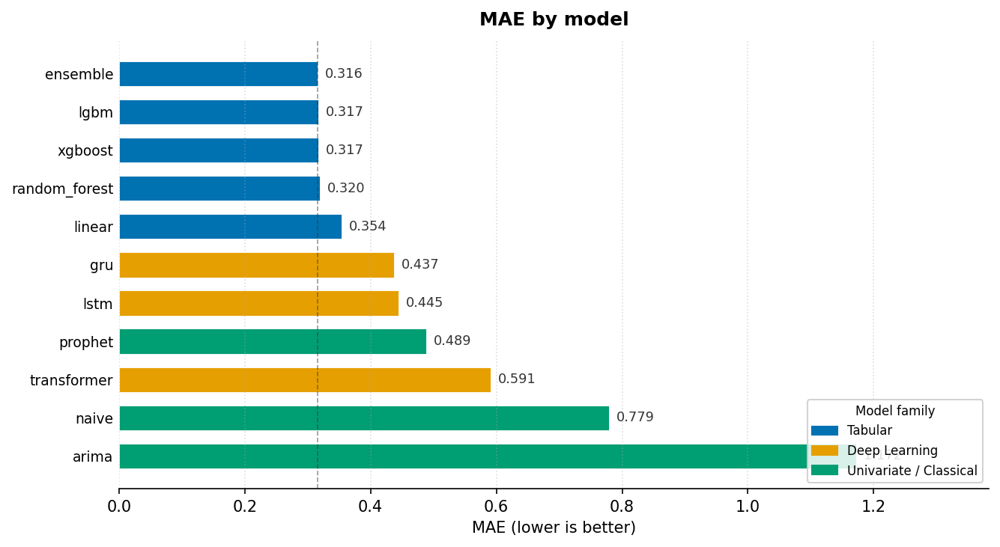
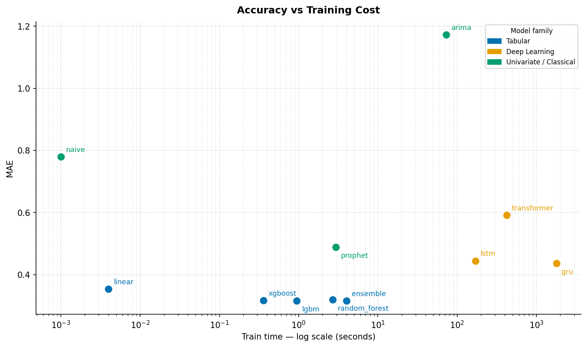
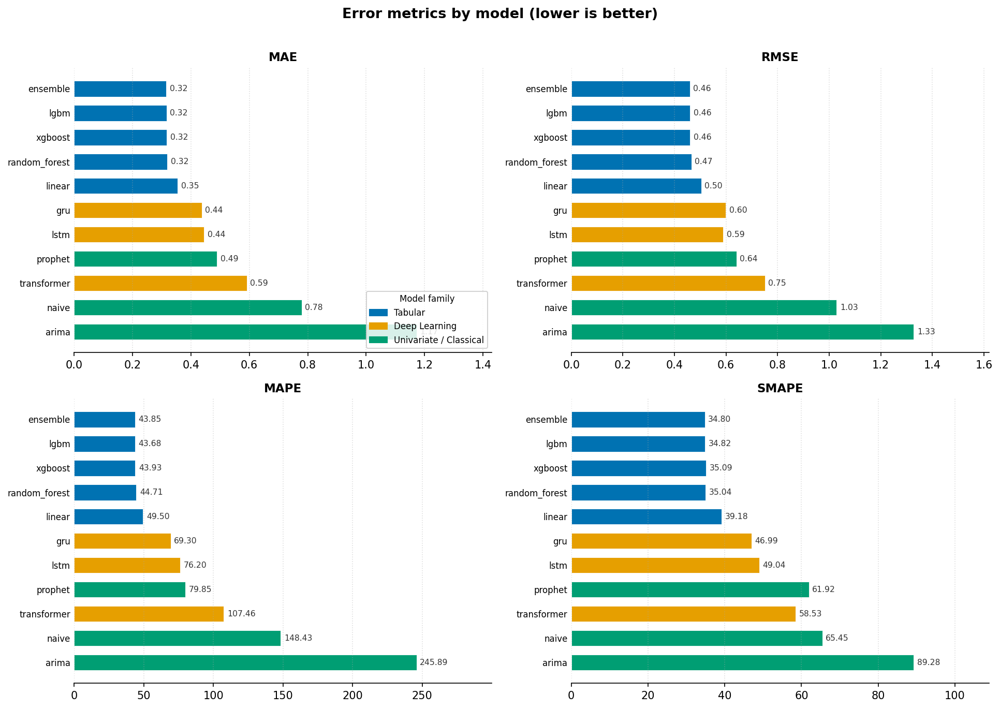
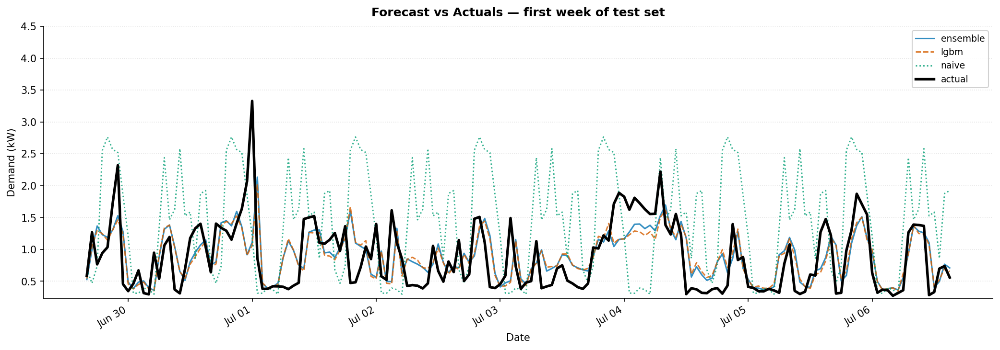

A rigorous benchmark of 11 time-series forecasting models on hourly energy demand — from a seasonal naive baseline to gradient-boosted trees, deep recurrent networks, and a stacking ensemble.
Chronological 80/10/10 split — test window Jun–Nov 2010 (3 400 rows).
| # | Model | MAE ↓ | RMSE ↓ | MAPE ↓ | SMAPE ↓ | Train (s) | Latency (s) |
|---|---|---|---|---|---|---|---|
| 1 | ensemble | 0.3157 | 0.4595 | 43.85 | 34.80 | 4.0 | 0.039 |
| 2 | lgbm | 0.3165 | 0.4609 | 43.68 | 34.82 | 0.9 | 0.006 |
| 3 | xgboost | 0.3173 | 0.4610 | 43.93 | 35.09 | 0.4 | 0.004 |
| 4 | random_forest | 0.3196 | 0.4655 | 44.71 | 35.04 | 2.7 | 0.027 |
| 5 | linear | 0.3541 | 0.5040 | 49.50 | 39.18 | 0.004 | 0.001 |
| 6 | gru | 0.4371 | 0.5988 | 69.30 | 46.99 | 1 788 | 0.427 |
| 7 | lstm | 0.4449 | 0.5886 | 76.20 | 49.04 | 170 | 0.643 |
| 8 | prophet | 0.4890 | 0.6405 | 79.85 | 61.92 | 2.9 | 0.455 |
| 9 | transformer | 0.5911 | 0.7503 | 107.46 | 58.53 | 423 | 1.910 |
| 10 | naive | 0.7792 | 1.0287 | 148.43 | 65.45 | 0.001 | 0.005 |
| 11 | arima | 1.1722 | 1.3277 | 245.89 | 89.28 | 72.9 | 0.145 |

MAE by model. Tabular models cluster at 0.316–0.354; deep learning and classical models trail by a wide margin.

Accuracy vs training cost. Log-scale x-axis. Tabular models hold the bottom-left — best accuracy, fastest to train.

All error metrics. Rankings hold across MAE, RMSE, and SMAPE. MAPE is the exception — LSTM inflates on low-demand hours.

Forecast overlay — first week of test set. Ensemble and LightGBM track the daily double-peak closely; naive drifts on atypical days.
Gradient-boosted trees beat every deep learning model — lag, rolling, and calendar features are sufficient for hourly demand.
Ridge regression (12 features, < 1 ms) reaches MAE 0.354 — ahead of every deep model.
GRU and LSTM spend 170–1 788 s training to land 38–40% behind LightGBM.
Averaging the top-3 tabular models improves MAE by 0.3% over solo LightGBM — probably not worth the 4× training cost.
All scores use strict time-ordered splits. Shuffling would leak future data and inflate every number.
ARIMA ranks last at MAE 1.17 on the raw series. Prophet's seasonality decomposition closes much of the gap (MAE 0.489).
Mean of LightGBM + XGBoost + Random Forest.
Best solo model. Sub-second training, SHAP support.
Same accuracy as LightGBM at 2.5× less training time.
100 trees averaged. Slightly higher variance than boosted models.
12 engineered features. Fastest to train; beats every deep model.
Best deep model. High training cost dominated by one-time shader compilation.
Two-layer recurrent network. Sequence modelling adds little over lag features here.
Trend + seasonality decomposition. Built-in uncertainty intervals.
Encoder-only architecture. Underperforms without a task-specific design.
Repeats the value from 24 hours prior. Zero parameters.
Raw series only — no calendar or lag features. Last place.
Requires uv. Dataset: UCI Household Power Consumption at data/energy.csv.
git clone https://github.com/surpradhan/forecasting-showdown
cd forecasting-showdown
uv sync --group dev# Run all 11 models
uv run python scripts/run_all.py
# Single model or group
uv run python scripts/run_all.py --model lgbm
uv run python scripts/run_all.py --group tabular
# Browse results
uv run python -m mlflow ui
uv run jupyter notebook